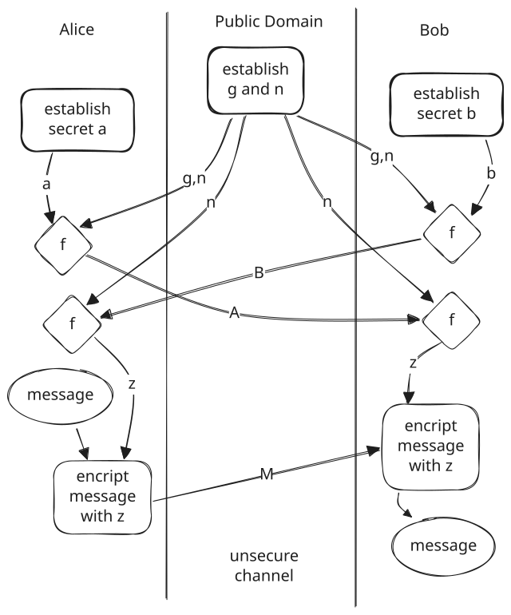
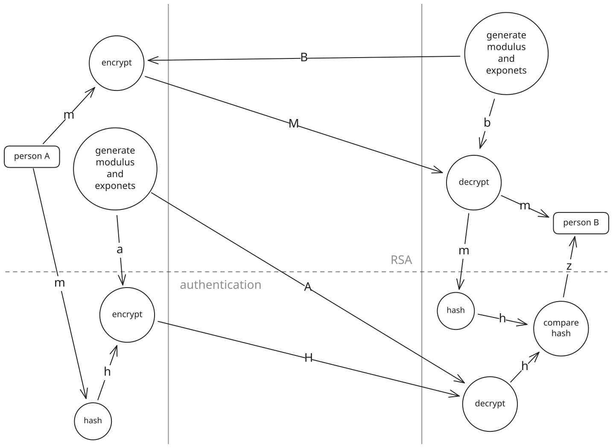

Why are prime numbers such a big deal in mathematics? It's quirky, but of what use is it really? This article will look into prime numbers and show how they are extensively used in key exchange and cryptography. The reader will find it no surprise that trust among 5 billion people using the internet rely on the humble prime.
Three problems will be considered. Assuming an insecure network, a sender needs to send a message to a recipient that:
- no one else can read (encryption),
- is sent without prior exchanging of a secret key (key exchange),
- the recipient can verify the sender is the sender (authentication).
Warning
This article is intended to take the reader on a discovery journey of interesting cryptography handshaking concepts and how prime numbers are used to secure them. Do not build and rely on your own security algorithms. There are plenty of robust open tools that are maintained by professionals.
There are two types of cryptography, symmetric where the same key is used for encryption and decryption, and asymmetric where each person has a publicly accessible key and a key that stays secret. Symmetric cryptography immediately raises the question of how a secret key can be shared over an insecure network.
Key Exchange
Diffie-Hellman (DH) key exchange was published in 1976 as a method to exchange a secret key over an insecure channel. It uses the hardness of the Discrete Logarithm Problem to calculate an irreversible representation of a secret key. The representation can be sent over an insecure channel. No one can do anything with it, except the communicating parties that use it to obtain a shared secret key.
Consider a secret key \(a\) and its public representation \(A\) that is owned by Alice. \(A\) can be obtained with \[A = f(g,a,n) = g^a \bmod{n}\]
where \(n\) is a large prime number and \(g\) is a fixed base. At this stage it's only important to understand that there is a function \(f\) that encrypts a secret. The form of \(f\) will be discussed in section.
Alice sends \(A\) to Bob that computes \(z\) with his secret key \(b\). \[\begin{align} f(A,b,n) &= A^b \bmod{n} \\ &= {g^a}^b \bmod{n} \\ &= g^{a b} \bmod{n} \\ &= z \\ \end{align}\]
Bob also obtains \(B\) and sends it to Alice that also computes \(z\) with her secret key \(a\). \[\begin{align} f(B,a,n) &= B^a \bmod{n} \\ &= {g^b}^a \bmod{n} \\ &= g^{b a} \bmod{n} \\ &= g^{a b} \bmod{n} \\ &= z \\ \end{align}\]

The Diffie-Hellman key exchange method.
Note that the same private key (\(z\)) was established without exposing secret keys \(a\) or \(b\) and no one can compute \(z\) with only \(g\), \(n\), \(A\) and \(B\).
Modular Exponentiation
Function \(f\) introduced in section is a modular exponentiation function. It has the form \[f(g,e,n) = g^h \bmod{n}\] where \(g\) is called the base, \(h\) the exponent and \(n\) the modulus. This is a workhorse in cryptography that gets unpacked in this section.
Motivation
In order to encrypt data, a mapping function is required that maps secret inputs to encrypted outputs. It must be easy to compute, hard to invert, have useful algebraic structure and be mathematically provable. A map can be mathematically expressed as \[x \mapsto f(x)\] but is simply one group of elements connected (mapped) to another group of elements. Figure shows various mapping ranging from weak to strong.
Types of mappings from inputs to outputs: a) analytically invertable, b) predictable function, c) incomplete cycle, d) a one-to-one bijection.
Normal continuous functions like \(g^x\) have useful algebraic properties but can be analytically inverted making decryption trivial. This is presented by the bi-directional arrows in figurea. \[X=g^x \iff x=\log_{g}(X)\]
Given \(X\), the secret \(x\) can be instantly calculated. But even if analytic inversion is not possible (figureb), continuous functions tend to be predictable. Combining \(g^x\) with a modulus operation adds deterministically unpredictable behaviour and irreversibility as shown in figure.
Predictable continuous functions vs unpredictable modular exponentiation.
The exponentiation provides mathematical structure with which algebraic operations can be performed and proofs of security conducted. Not only does exponentiation enables composibility that allows \[\begin{align} {g^b}^a \bmod{n} &= g^{b a} \bmod{n} \tag{eq 1} \\ &= B^a \bmod{n} \end{align}\] in Diffie-Hellman (section). It also allows modular exponentiation to be backed up by rich mathematical theory like \(\mathbb{Z}^*_c\) in group theory that provides proofs for the behaviour of the function \(f\).
Addressing the ease of computing \(f\), highly efficient methods exist even for large exponents. The Right-to-Left Binary Method, for example, can compute \(f(g,x,n)\) in \(\Theta(\log x)\) without actually calculating \(g^x\). Therefore, despite the existence of other one-way functions like elliptic curves, lattices, hash functions, isogenies, modular exponentiation is a preferred method for most cryptography.
Modular Exponentiation use prime or semiprime modulo \(n\) in \[f(g,e,n) = g^h \bmod{n}\] and is an elegant cryptographic machine that provides easy forward computation, hard to reverse bijection mapping with rich mathematical theory backing it up.
Application
The perfect mapping of figured is on the cards but there are still criteria to be addressed. The fixed values in modular exponentiation must be chosen correctly to avoid partial mappings like the one shown in figurec.
Modular exponentiation is actually used in two ways. One way is to keep the exponent fixed and have a variable base. The second is to have a fixed base and use the exponent as the input variable. \[x \mapsto f(x,h,n) = x^h \bmod{n}\] \[x \mapsto f(g,x,n) = g^x \bmod{n}\]
General securing criteria is:
- \(n\) must be large - Diffie-Hellman uses a minimum number size of 2048 bits (617 digits) to ensure it is computationally infeasible to test all combinations and find the secret (brute-force)
- \(n\) must be prime or semiprime - if not:
- the fixed values (\(h\) or \(g\)) might not meet the necessary criteria
- \(n\) can be factored into smaller numbers making it easier to brute-force
- the mapping may not even be cyclical, completely breaking encryption (e.g. \(4^x \bmod{16}\) results in \(\{4,0,0,...\}\))
- the fixed values (\(e\) or \(g\)) must adhere to the necessary criteria causing small mapping cycles that repeat, also making it easier to brute-force
The last point is important. Lagrange’s theorem (group theory) states “the order of any element always divides the order of the group”. This is seen in action with, for example, \(4^x \bmod{17}\) that results in a repeating sequence \(\{4,16,13,1\}\). The 4 is not a generator of the group that is criteria explained in section. The length of the sequence (4) divides the order of the group (\(n-1 = 16\)). The unpredictable behaviour is four times weaker.
Base as Input
This method is used in RSA encryption that is further discussed in section. The exponent is kept fixed and the base is the value that gets encrypted. \[f(x,e,n) = x^h \bmod{n}\]
The criteria is simple. \(n\) must be prime and \(h\) a coprime with \(n-1\). Change the values of \(h\) and \(n\) below and see how the mapping cycles through the numbers in figure.
\(n\):
\(h\):
\(\zeta\) sequence:
Modular clock diagram.
Exponent as Input
This method is used for Diffie-Hellman and uses the Discrete Logarithm Problem \[X = g^x \bmod{n}\]
The criteria here is that \(n\) must be prime (or semiprime for RSA, section) and \(g\) must be a generator of the group \(\{1,2,...,n-1\}\) (a primitive root modulo \(n\)). A utilization ratio, \(\gamma\), can be expressed as the number of elements utilized, \(|\zeta|\), divided by the total number of elements in the group, \(n-1\). Thus, when \(n=15\) and \(g=2\), \(\zeta = \{2,4,8,1\}\) and the utilization ratio, \[\gamma = \frac{|\zeta|}{n-1}=\frac{4}{14}\] is approximately 0.286. With \(n=19\) and \(g=2\) it cycles through all the numbers.
Figure shows how many numbers are utilised with a clock diagram, depending on the \(n\) and \(g\) values selected in the input boxes.
\(n\):
\(g\):
\(\zeta\) sequence:
Modular clock diagram.
Plot of \(\gamma\) against \(n\) with prime \(n\) values highlighted with green lines.
Figure shows a graph of \(\gamma\) over a range of \(n\) values. Even numbers of \(n\) are omitted and prime \(n\) numbers are highlighted with green vertical lines. Click on the points to set \(n\) and \(g\) above and see how each pattern look in figure.
The expectation is that \(\gamma=1\) at every prime but the matching generator \(g\) must also be selected. Switching between the \(g\) values on figure reveals the generators for each group of modulus \(n\). There is a procedure for finding a generator for a group but DH typically uses predefined n-g combinations.
The Atoms of Math
If asked to find the factors of 5040, a sensible strategy might be to start from the lowest numbers and see what can divide 5040. \[\begin{align} 5040/1 &= 5040 && \text{(no effect, use 2)} \\ 5040/2 &= 2520 && \text{(continue with 2)} \\ 2520/2 &= 1260 && \text{(continue with 2)} \\ 1260/2 &= 630 && \text{(continue with 2)} \\ 630/2 &= 315 && \text{(try to divide by 3)} \\ 315/3 &= 105 && \text{(try again with 3)} \\ 105/3 &= 35 && \text{(continue with 5)} \\ 35/5 &= 7 && \text{(only divisible by 7)} \\ 7/7 &= 1 && \text{(found all factors)} \\ \end{align}\]
The list of factors are \[2*2*2*2*3*3*5*7=5040\] That's interesting because 5040 was actually constructed from factors \[2*3*4*5*6*7=5040\] However, 4 and 6 have factors of their own, thus \[\begin{align} 5040&=2*3*4*5*6*7 \\ &=2*3*(2*2)*5*(2*3)*7 \\ &=2*2*2*2*3*3*5*7 \\ &=2^4*3^2*5*7 \end{align}\]
Notice that all the factors are prime numbers. In fact, every number has only one list of factors that is all prime. This is called the Fundamental Theorem of Arithmetic and was proved by Carl Friedrich Gauss in 1801 with original credit to Euclid. Admittedly I was surprised to only realise this while writing this article.
Prime numbers are not just weird numbers in everyday counting numbers, they are actually the atoms of which all numbers are made up of. This also means that two prime numbers can be selected, and the product of them will only have those two numbers as factors.
When asked to find the factors of 697, only 17 will be found to divide it together with 41. When asked about 22790237 one will have to go up to 3187. It becomes apparent that factoring products of two large primes is difficult.
Multiplying two large prime numbers results in a new prime number with only the two primes as factors. The multiplication (forward) is easy, but factoring it (backwards) into the two original primes is hard.
Inventing RSA
With asymmetric cryptography each person has a public key (\(S\), \(R\)) and a private key (\(s\), \(r\)). Anyone can see the public keys but only the owners ever know their own private keys. The sender can encrypt a message with the recipient's public key \(R\) and only the recipient can decrypt the message with the matching private key \(r\). Encryption is established without exchanging any secret keys.
The modular exponentiation method in section can be used to encrypt messages. The message \(m\) is used for the base and raised to the power of an encryption key \(e\). The encrypted message \(M\) can be calculated with \[M = m^e \bmod{n}\]
Equation 1 presents the power combination mechanism that is convenient for decryption of \(M\) by applying a decryption key as another power to get back to \(m\). \[\begin{align} m = M^d \bmod{n} &= {m^e}^d \bmod{n} \\ &= m^{ed} \bmod{n} \end{align}\]
At this point it's worth switching to modulo congruence notation. It is like an equal sign, just under the condition of mod \(n\). \[4+3 \neq 1\] \[4+3 \equiv 1 \pmod{6}\]
Similarly \[m \equiv m^{ed} \pmod{n} \tag{eq 2}\]
The idea is intuitive but finding \(e\) and \(d\) to be able to accomplish encryption and decryption requires a turn in mathematics history.
Mathematical Insights
Rivest, Shamir and Adleman published RSA in 1977 in which they derived \(e\) and \(d\) to encrypt and decrypt messages. The RSA authors build on math discovered three centuries earlier. The initial version of Euler's theorem was first published in 1736 as a proof of Fermat's little theorem (published without proof in 1640).
An interesting phenomenon can be observed in section when \(n\) is prime. Fermat saw that, for \(x \leq n\), \[x = x^n \bmod{n}\] The implications of this discovery can not be overstated since it's also equal to a normal modular operation. A revealing observation here is that there are thus repeating exponents simply equalling \(x\). \[x \equiv x^n \equiv x^{k(n-1)+1} \pmod{n}\] The reader can test this in section by taking \(n=11\) and changing \(h\) from 1, to 11, to 21, to 31, and so on. The result is the same for all values of \(k\). The period length, \(n-1\), is a very significant number. It is called Euler's Totient (discovered in 1763) and is denoted \(\varphi(n)\). Dividing by \(x\) results in a form that Euler later proved. It maps all values for \(x\) to 1. \[x/x \equiv x^n/x \equiv x^{n-1} \equiv 1 \pmod{n}\]
Euler's theorem \[m^{\varphi(n)} \equiv 1 \pmod{n}\] shows that there is a power one can raise a base to that results in a remainder of 1 when \(n\) is prime. The exponents \(e\) and \(d\) are calculated with \(\varphi(n)\). First, \(1 \pmod{n}\) is isolated in equation 2. \[m^{ed-1} \equiv 1 \pmod{n} \tag{eq 3}\]
Secondly, Euler's theorem is modified to handle any multiple of \(\varphi(n)\). \[(m^{\varphi(n)})^k \equiv 1^k \equiv 1 \pmod{n} \tag{eq 4}\]
Equations 3 and 4 are combined. \[m^{\varphi(n)k} \equiv m^{ed-1} \equiv 1 \pmod{n}\]
The exponents \(e\) and \(d\) can then be calculated with \[ed-1 = \varphi(n)k \iff ed = \varphi(n)k+1\]
that can be transformed into modulo form. \[ed \equiv 1 \pmod{\varphi(n)}\]
The values in modular exponentiation are governed by mod \(n\). The exponents live in a mod \(\varphi(n)\) world. The \(d\) exponent forwards a message encrypted with \(e\) to produce the original message again.
Mappings
The original-encryption-decryption workflow can be expressed function wise as \[m \mapsto f(m,e,n) \mapsto f(f(m,e,n),d,n)\] If the message is \(m\), \(e=3\) and \(n=11\), then \(d=7\) \[f(m,3,11) = m^3 \bmod{11}\] and \[\begin{align} f(f(m,3,11),7,11) &= (m^3 \bmod{11})^7 \bmod{11} \\ &= m^{3*7} \bmod{11} \\ &= m \end{align}\]
For all possible values of \(m\) \[\begin{Bmatrix} 1 \\ 2 \\ 3 \\ 4 \\ 5 \\ 6 \\ 7 \\ 8 \\ 9 \\ 10 \end{Bmatrix} \mapsto \begin{Bmatrix} 1 \\ 8 \\ 5 \\ 9 \\ 4 \\ 7 \\ 2 \\ 6 \\ 3 \\ 10 \end{Bmatrix} \mapsto \begin{Bmatrix} 1 \\ 2 \\ 3 \\ 4 \\ 5 \\ 6 \\ 7 \\ 8 \\ 9 \\ 10 \end{Bmatrix}\]
A secret value of \(m=2\) maps to an encrypted value of \(M=8\). Decryption applies the inverse mapping of 8 to 2 again. \[2 \mapsto 8 \mapsto 2\]
Test it in section by setting \(n=11\), \(h=3\) and noting the 2nd number in the \(\zeta\) sequence, it should be 8. Then change to \(h=7\) and note the 8th number, it should be 2.
Decoupling Modulo and Totient
The reader might have noticed that \(e\) and \(d\) are obtained from the \(\varphi(n)\). However, \(n\) is a public number and, thus, anyone will be able to determine \(d\) and decrypt \(M\). Another strategy will be followed to obtain an \(n\) and \(\varphi(n)\). It starts by generating two large prime numbers, \(p\) and \(q\), and calculating the product. \[n = p q\]
\(n\) is a new semiprime number that can be publicly shared while \(p\) and \(q\) remain secret because of the irreversibility pointed out by Insight. Thus, \(p\) and \(q\) can still be used to calculate Euler's Totient: \[\varphi(n) = (p-1)(q-1)\]
Encryption and Decryption
Two primes are required to produce the modulus \(n\) and Euler's Totient \(\varphi(n)\).
\[n = p q\] \[\varphi(n) = (p-1)(q-1)\]
\(p\):
\(q\):
\(n\):
\(\varphi(n)\):
\(e\) must be smaller than \(\varphi(n)\) and be coprime with it. A number that, in its binary form, has zeros and starts and ends with 1 is a preferred for \(e\). \(d\) is then obtained by finding a \(d\) where \[ed \bmod{\varphi(n)} = 1\] \[\gcd(e,\varphi(n)) = 1\] \[ed \equiv 1 \pmod{\varphi(n)}\]
\(e\):
\(d\):
Encryption on a Single Number
The public key consists of \(e\) and \(n\). Anyone can use a recipient's public key to encrypt a number \(x\) with \(c = x^e \bmod{n}\).
\(x\):
\(c\):
The recipient's private key consists of \(d\) and \(n\). The encrypted number can be decrypted with \(x = c^d \bmod{n}\).
\(x\):
Encryption on a String
The number \(x\) is probably only 4 bytes. To encrypt strings of bytes a padding scheme is used that first converts the string into a 4 byte sequence of padded numbers that can be passed through encryption. The padding scheme is reversed after decoding to obtain the original message.
Original message:
Original characters:
Padded message:
Encrypted message:
Decrypted message:
Authentication
Notice that only two of the original goals were covered thus far. The receiver still needs to know that the sender is in fact the sender. With RSA this can be done by simply encrypting a string with the sender's private key. The receiver can then use the sender's public key to decrypt it and see if it makes sense. The only problem is that everyone can decrypt that message.
A popular solution to get both encryption and authentication is to run the message content through a hashing function like SHA-256 prior to encryption. The hashing is an irreversible function that takes in data and produces an unpredictable digest (number) that's unique. Hashing the message and encrypting the hash with the private key is called signing the message or creating a digital signature.
Anyone that decrypts the signature only gets the hash digest. However, the recipient can apply the same hashing on the private-key-decoded message and compare it with the hash. If it matches, the recipient knows that the message is signed by the sender. Authentication is established together with secure encryption. The RSA encryption-decryption flow with authentication can be seen in the following diagram.

Conclusion
Prime numbers get far less attention than they should be since they are the atoms of the numbers we use everyday. This article shows how prime numbers are used to secure DH key exchange and RSA. Modular exponentiation is a simple powerful tool that addresses various cryptographic needs.
People often fall ignorant of the role of mathematics. Euler and Fermat probably did not realise how important their theories would become centuries later. Mathematics is a deep, slow form of knowledge that should not be discarded if its value cannot immediately be realised.
The beauty and genius with which the key-exchange, encryption and authentication problems were solved is astonishing. But as always, it was made possible by many discoveries and innovations that came before it. Big or small, don't stop exploring and don't despise small contributions.